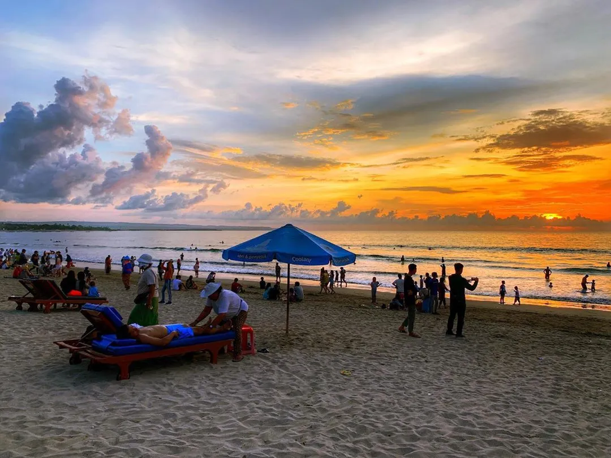

Pantai Kuta - Bali
Fasilitas: Hotel, Restoran, Penyewaan Surfing
Pantai Kuta terkenal dengan pasir putih dan pemandangan sunset yang indah.

Pantai Kuta terkenal dengan pasir putih dan pemandangan sunset yang indah.

Raja Ampat adalah surga bawah laut dengan keanekaragaman hayati yang luar biasa.
Menikmati keindahan Bali selama 2 hari.
Harga: Rp 3.000.000
Menikmati keindahan Raja Ampat selama 3 hari.
Harga: Rp 1.500.000